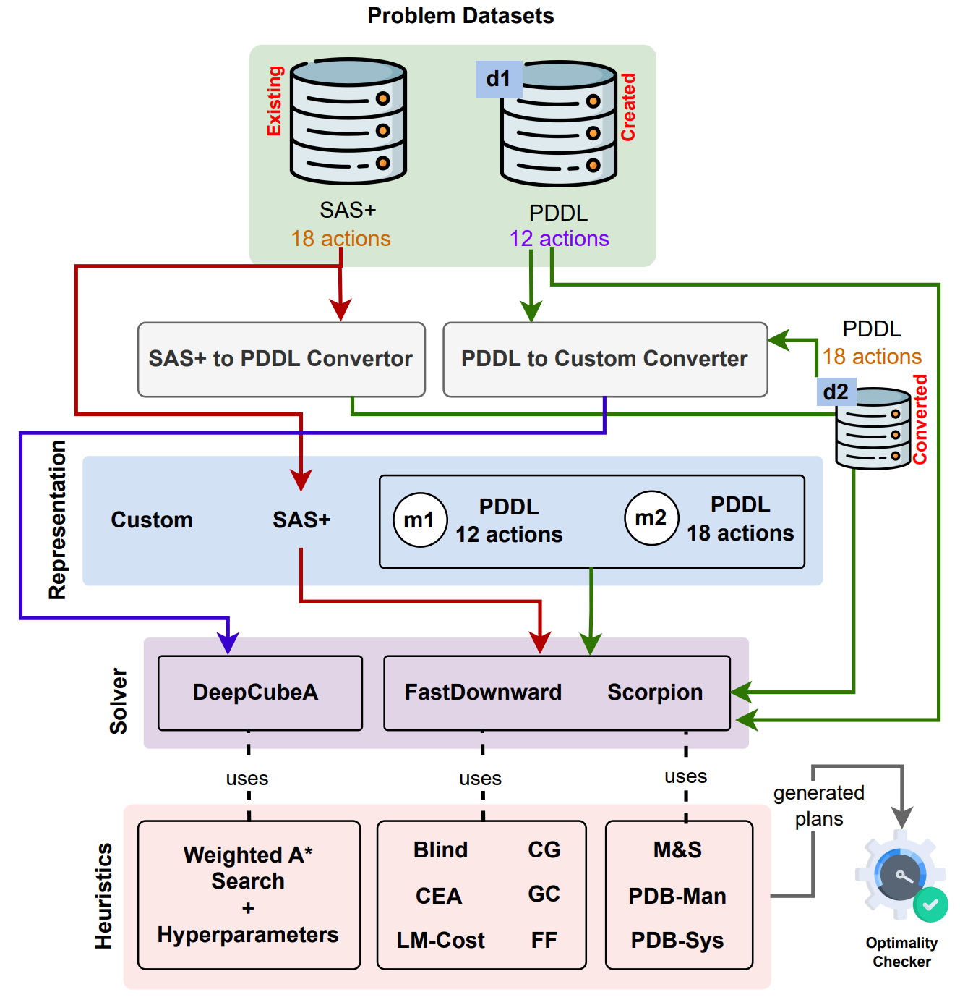

Rubik's CubeSolving the Rubik’s Cube with a PDDL Planner Rubik's Cube (RC) is a popular puzzle that is also computationally hard to solve. In this demonstration, we introduce the first PDDL formulation for the 3-dimensional RC and solve it with an off-the-shelf Fast-Downward planner. We also create a plan executor and visualizer to show how the plan achieves the intended goal. Our system has types of two audiences: (a) planning researchers who can explore a hard problem and improve their planning algorithms, and (b) RC learners who want to learn how to solve the puzzle at their own pace and can now modify an initial plan (e.g., manually, using other algorithms) and see their execution. Representative Publications |
|
On Solving the Rubik’s Cube with Domain-Independent Planners Using Standard Representations Rubik's Cube (RC) is a well-known and computationally challenging puzzle that has motivated AI researchers to explore efficient alternative representations and problem-solving methods. The ideal situation for planning here is that a problem be solved optimally and efficiently represented in a standard notation using a general-purpose solver and heuristics. The fastest solver today for RC is DeepCubeA with a custom representation, and another approach is with Scorpion planner with State-Action-Space+ (SAS+) representation. In this paper, we present the first RC representation in the popular PDDL language so that the domain becomes more accessible to PDDL planners, competitions, and knowledge engineering tools, and is more human-readable. We then bridge across existing approaches and compare performance. We find that in one comparable experiment, DeepCubeA {DeepCubeA trained with 12 RC actions} solves all problems with varying complexities, albeit only 18\% are optimal plans. For the same problem set, Scorpion with SAS+ representation and pattern database heuristics solves 61.50\% problems, while FastDownward with PDDL representation and FF heuristic solves 56.50\% problems, out of which all the plans generated were optimal. Our study provides valuable insights into the trade-offs between representational choice and plan optimality that can help researchers design future strategies for challenging domains combining general-purpose solving methods (planning, reinforcement learning), heuristics, and representations (standard or custom). Representative Publications
|
|  |
IPC SubmissionRubik's Cube PDDL domain submission to IPC 2023 Classical track Useful Links |